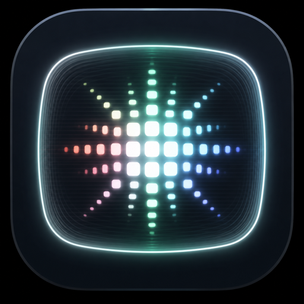

AUDIO-REACTIVE
Visuals driven by sound
The render engine reacts to the audio on the track — level, motion and transients shape the image in real time. Insert it anywhere; the audio passes through untouched.

A video synthesiser that listens. Drop it on a track and Phosphor analyses the audio — untouched as it passes — and renders a beat-locked visual field you can throw fullscreen onto a second screen. Live visuals that move with the music, straight from your DAW.
A paid SHLabs plugin in active development. Follow SHLabs for the release.
The render engine reacts to the audio on the track — level, motion and transients shape the image in real time. Insert it anywhere; the audio passes through untouched.
One source control morphs across five visual fields — bands, rings, plasma, moiré and spiral — with spatial frequency, domain warp, and full palette control over hue, spread and brightness.
Feedback trails with tunnel zoom and rotation, a mirror-to-kaleidoscope fold, RGB chromatic split, and colour posterise — stack them for anything from subtle motion to full psychedelia.
Animation locks to your transport — sample-accurate from the host playhead inside the DAW, or over Ableton Link when running standalone alongside Live. Motion stays on the grid.
Throw the render fullscreen onto a second display or projector for live shows and installations — a visual instrument that runs right next to the sound it's reacting to.
The same host-agnostic render core runs as a VST3/AU insert and as a standalone app, so the look you build in the studio comes with you to the stage.